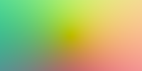

**Assignment 1 Report**
Student name: XXXX
(##) About this template
* Structure your report using numbers and titles following those of the assignment.
* For every task include all images you generated. dirt will generate both an `.hdr` and an sRGB tonemapped `.png` image of your rendering. Use the `.png` in the comparisons in your report.
* For tasks where we provide a reference image, include a comparison of your output to the reference (see examples of this below)
* Include descriptions of encountered problems, a list of external libraries that you used (if applicable) and the time you spent on each task.
For an overview of Markdeep and its syntax, see the [official demo document](https://casual-effects.com/markdeep/features.md.html) and
the associated [source code](https://casual-effects.com/markdeep/features.md.html?noformat).
(##) Feedback
Use this section to provide feedback about the assignment.
(##) Task 1: Generating rays and using JSON
Manual Ray Images:

Camera Ray Images:
(##) Task 2: Transforms
(##) Task 3: Spheres
(##) Task 4, 5, 6: Materials, Recursive Ray Tracing, and Scene Renderer
Recursive Ray Tracing:
Plane Scene:
Balls Scene:
Reflective Scene:
Refractive Scene:
Quad Light:
Cornell Box:
(##) Task 7: Ray-Triangle Intersection
Your image will be significantly noisier than the reference unless you choose to render with a higher number of samples. The reference below uses 1024 samples per pixel.
(##) Task 8: Solid Textures
Constant Texture:
Checkerboard Texture:
Perlin Noise:
(##) Task 9: Image Textures
UV-Mapping Spheres:
UV-Mapping Quads:
UV-Mapping Triangles:
Your image will be significantly noisier than the reference unless you choose to render with a higher number of samples. The reference below uses 1024 samples per pixel.